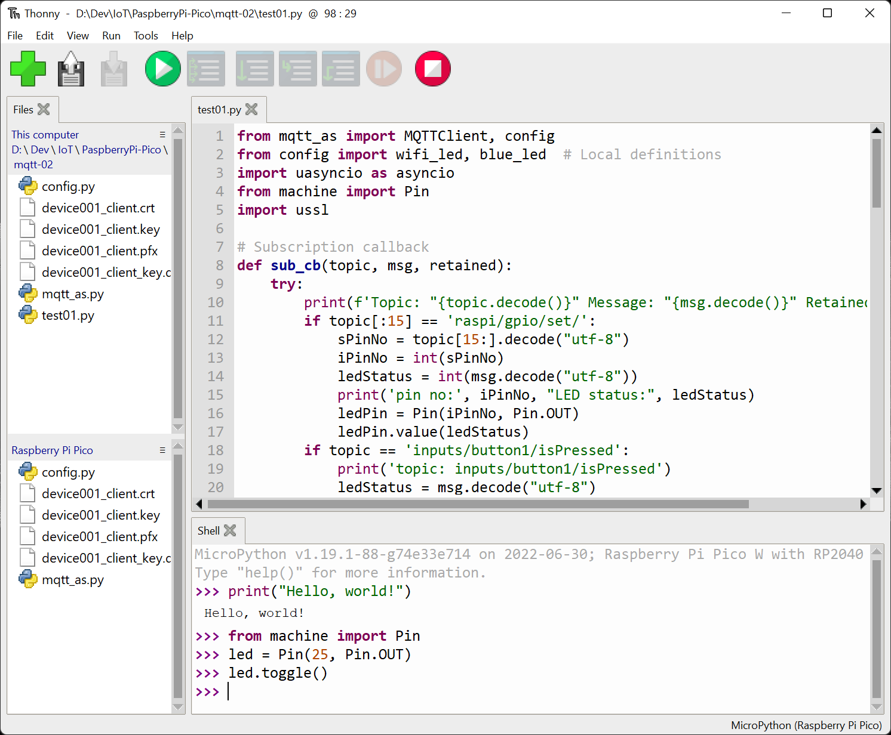

Python in the physical world · Day 1
Make it light
Today, one line of Python will leave the screen and change the real world.
Mission: send a secret message using light.
Hold up a Pico before showing any code. Ask: “How could words typed here
possibly make this tiny light change?” Accept guesses; do not explain yet.
The lab begins later—the first part explicitly teaches the Python needed.
Learning goals
By the end, you can…
01
Use Thonny’s Shell and editor for two different jobs.
02
Recognise strings, integers, floats, expressions, and variables.
03
Read errors and trace a script one line at a time.
04
Explain how Python changes an LED output.
05
Build an LED circuit safely with a resistor.
06
Create a recognisable light signal using named values.
Read only the bold ideas, not every card. Ask students to choose which goal
sounds most familiar and which sounds newest.
Today’s route
Teach → practise → build
Meet
→
Read
→
Control
→
Build a
During teaching: predict before Run . During the lab:
change one thing at a time .
Establish the lesson rhythm. Students should not open the project solution
during teaching. Pair roles: driver types, navigator predicts and checks.
01
Part 1 · Your tools
Meet Python and Thonny
First understand the tools. Then use them to control hardware.
This section adapts the teaching progression in TEALS Unit 1 lessons
1.01–1.02 to Thonny and MicroPython.
A computing system
Input → process → output
Watch and discuss · Thonny stays closed for now
Your codeinput
→
MicroPythonprocess
→
Text + lightoutput
What is different about a physical output?
Expected answer: it changes something outside the computer screen. Clarify
that the keyboard is an input to Thonny; today’s hardware is output-only.
Our IDE
Find the Files, Editor, and Shell
Do now · Open Thonny and follow along

Files
Choose a saved program on this computer or the Pico.
Editor
Write, change, and save a complete program.
Shell
Try one line now and read program output or errors.
Your colours and toolbar may differ, but these three areas do the same jobs.
Point to the students' real Thonny window while naming each area. Do not
discuss the advanced MQTT code shown in the screenshot; only identify Files,
Editor, Shell, and the interpreter status. IDE means integrated development
environment: one application to create, edit, save, run, and inspect programs.
Confirm the interpreter selector says “MicroPython (Raspberry Pi Pico).”
Interactive mode
The Shell answers one line now
Try in Thonny · Type each line after predicting
>>> print("Hello, Pico!")
Hello, Pico!
>>> 2 + 3
5
>>> type(0.5)
<class 'float'>
The interpreter reads Python, evaluates it, and shows
the result.
Have students type each line, but require a spoken or written prediction
before Enter. Explain that the >>> prompt belongs to the Shell and should
not be typed into a script.
Values and types
Python asks: “What kind of value is this?”
Discuss · Keep Thonny open, but do not type yet
string "Pico"
Text inside quotes.
integer 42
A whole number.
float 0.5
A number with a decimal point.
Why is "42" not an integer?
Ask students to hold up 1, 2, or 3 fingers for string, integer, or float as
you call out examples. Quotes make "42" text. Do not introduce casting yet;
that belongs to Day 2.
Expressions
An expression produces a value
Try in Thonny · Predict, then test all three
Think like the interpreter
Read the values.
Apply the operator.
Produce one result.
Predict: Which result is a float? Which is a string?
Run the three examples in the Shell. 10 / 2 produces 5.0 in Python 3 and
MicroPython. “Pi” + “co” joins strings. Avoid broad arithmetic coverage;
the goal is values and evaluation.
Errors are evidence
Read the last line first
Try in Thonny · Make this typo on purpose
>>> pritn("Hello")
Traceback (most recent call last):
File "<stdin>", line 1
NameError: name 'pritn' isn't defined
3 · Compare it
pritn versus print
Change only pritn to print, then run it again.
If it works, the misspelling caused the error.
Create the typo live. Model calm debugging language: symptom, evidence,
suspected cause, one change, rerun. Ask why changing only one thing gives
clearer evidence. If useful, also show a missing quote. Do not use 10 / 0
as the first error because the typo is easier to act on.
02
Part 2 · Saved programs
From one line to a script
A saved program lets us plan a sequence and run it again.
This section adapts TEALS Unit 1 lessons 1.03–1.05: scripts, variables,
comments, and systematic debugging.
Script mode
The editor stores a sequence
Try in Thonny · Type, save, predict, then Run
Shell
Runs one instruction immediately.
Best for a tiny experiment.
Script
Saves instructions in a .py file.
Runs from top to bottom.
print("Three...")
print("Two...")
print("One...")
print("Hello, physical world!")
The program is the instructions. The output is what happens when they run.
Ask students to point to the program and then the output. Run the script and
compare the Shell output order with the editor order.
Read line by line
Trace before you press Run
Watch · Point to each line; do not run it yet
from machine import Pin
from time import sleep
led = Pin("LED", Pin.OUT)
print("Light on")
led.on()
sleep(1)
led.off()
print("Finished")
Screen
Which words appear?
Time
Where does it pause?
Use Reveal’s line highlights as a trace. Students narrate each line. Clarify
that from/import and Pin setup are supplied hardware vocabulary today;
students need to recognise their purpose, not memorise them.
Hardware vocabulary
Three lines connect Python to the Pico
Try together · Open and Run 01_hello_pico.py
PinGives Python access to a Pico pin.
"LED"Names the onboard LED.
Pin.OUTSays the pin sends a signal out.
from machine import Pin
led = Pin("LED", Pin.OUT)
led.on()
Today you may reuse this setup. Your job is to explain what it achieves,
not reproduce it from memory.
Avoid teaching object-oriented vocabulary. “led is our useful name for the
output” is enough. Demonstrate led.on() and led.off() in the Shell if the
connection is stable.
Variables
A useful name that refers to a value
Discuss · Identify names and values before running
message = "Team Comet"
on_time = 0.15
off_time = 0.35
Left of =
The variable name.
Right of =
The value stored under that name.
Which variable changes text? Which variables change time?
State explicitly: = means assignment today, not “is equal to” as in maths.
Comparison == is taught on Day 2. Have pairs identify each value’s type.
Why names matter
One edit can change every use
Try in Thonny · Open 02_variable_blink.py and Run it once
on_time = 0.15
led.on()
sleep(on_time)
led.off()
Experiment
Change 0.15 to 1.5.
Predict: What changes? What stays unchanged?
sleep(on_time) uses the value stored in on_time.
Change that value once, and all three ON pauses change.
Students run the unmodified file first. Then they change only on_time from
0.15 to 1.5, predict, and rerun. Ask what changed and what did not. Point
out that 1.5 is a float, not a string.
Comments
Notes for humans, ignored by Python
Discuss · Which comment helps a reader more?
# First group: three short flashes
led.on()
sleep(short_flash)
led.off()
Useful comment
Explains the intention: what does this block mean?
Not useful
# turn LED on merely repeats led.on().
Comments are adapted from TEALS lesson 1.04, but input() is deliberately
postponed because the Day 1 physical project does not require it.
03
Part 3 · From code to circuit
Make the physical output safe
Code can be corrected with Run. Wiring must be checked before power.
Stop the program and unplug USB before distributing circuit parts.
Safety gate
Unplug → build → partner-check → power
Get ready to build · Stop the program and unplug USB
Stop the program and disconnect USB.
One contact per hole
Every coloured endpoint dot represents one real breadboard hole.
Use the resistor
GP15 must reach the ordinary LED through 220 Ω .
Check orientation
Long leg/anode toward the resistor; short leg/flat edge toward GND.
Never connect a GPIO directly to GND. Stop if anything becomes hot.
Hold up the 220 ohm resistor and compare its bands with the kit reference.
Students should point out the LED’s long leg and flat edge on a real part.
Trace aloud: GP15, green jumper, 220 ohm resistor, LED long leg, LED short
leg, black jumper, ground rail, Pico GND. The top rails are visibly unused.
Open the linked HTML if students need the exact table or a zoomable view.
What ON and OFF mean
Why the LED lights
Discuss · Trace the complete circuit
led.on()GP15 becomes 3.3 V
→
Current flowsresistor protects LED
→
LED lightsthen current reaches GND
led.off()GP15 becomes 0 V
→
No voltage differencecurrent stops
→
LED is dark
In the copied program, change only
Pin("LED", Pin.OUT) to Pin(15, Pin.OUT).
This is conceptual, not a full electricity lesson. ON makes GP15 high,
creating a voltage difference between GP15 and GND. Conventional current
flows through the resistor and correctly oriented LED. OFF brings GP15
close to GND, so there is no useful voltage difference. Ask why the
resistor is still necessary and what a reversed LED would do.
Debugging physical systems
Code, circuit, or assumption?
Discuss · Choose one exact check for each column
Code
Wrong pin? Misspelled name? Program still running?
Circuit
LED reversed? Wire one row away? Missing resistor?
Assumption
Did we predict the wrong output or inspect the wrong LED?
If the external LED stays dark: first run the known-working
onboard-LED file. If that works, run the supplied GP15 ON/OFF test. If
GP15 still does not light the LED, stop, unplug USB, and check the circuit
against the diagram.
Walk through the decision sequence. If the onboard LED file fails, inspect
the Thonny interpreter, USB connection, and running program before touching
the circuit. If the known GP15 test fails after the onboard test succeeds,
stop and unplug before checking LED orientation, resistor placement, GP15,
and GND. Do not change code and wiring simultaneously.
04
Part 4 · Your challenge
Secret Signal Machine
Now apply the teaching. The challenge is yours; the setup is supplied.
Transition to the student lesson and starter file. This is the lab portion,
analogous to the TEALS Unit 1 project but adapted to a physical output.
Your build
Create a message made of light
Must include
a printed team name;
short and long flashes;
at least two timing variables;
a clear pause between groups of flashes;
a final off state.
Build it in this order
Run the starter: check its one short flash.
Add two short flashes to finish the first group.
Change short_flash; check all three.
Add a pause, then a group using long_flash.
Hide the code and ask a partner to decode it.
Keep solution files hidden or teacher-controlled. Minimum success can use
the onboard LED. Strong work moves the same logic to the checked GP15
circuit. Day 1 repetition is intentional; loops arrive on Day 3. While
circulating, first check that one flash works and ends off. Later, ask
students to demonstrate what changes when they edit one timing variable,
and ask both partners to explain the lines they added. Swap driver and
navigator after the first working flash or after 20 minutes.
Exit ticket
Complete the explanation
“When Python runs led.on(), the output is ________,
and when Python runs print(), the output is ________.”
What evidence today changed how you think code works?
Expected distinction: physical light versus text in the Shell. Collect a
response from every student, not only each pair. End with shutdown: stop,
ensure LEDs are off, unplug USB, and inventory components.
Teacher reference
Teaching sequence and sources
Adapted teaching sequence
TEALS Unit 1 lessons 1.01–1.05: IDE, interpreter, values and types,
expressions, scripts, variables, comments, and debugging.
Physical-computing adaptation
Thonny with MicroPython, onboard LED, GP15 ordinary LED circuit, and
the Secret Signal Machine lab.
Source curriculum:
TEALS Introduction to Computer Science, Unit 1 slide decks
.
Course circuit artwork is original and documented in the workshop source notes.
This slide is for teacher reference and attribution; it need not be shown
during class. The deck paraphrases and reorganises the concepts rather than
reproducing the TEALS slides.